Canon ours Proche+ — C-v3 (ADOPTED)
GO fondateur : concept C → C-v3 verrouillé —
ours brun dodu, mono-sourcil Frida, mèche blanche, pattes d’oie, gilet crème fleurs mexicaines, sans nœud.
Motif gilet = variable. Voir README.md.
C-v3 — Master
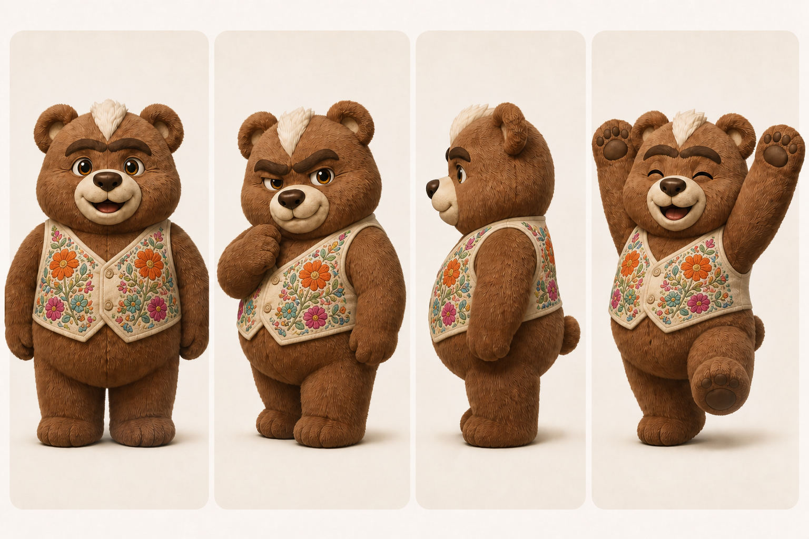
Aussi : reference-sheet.png
Preuve cohérence — fauteuil
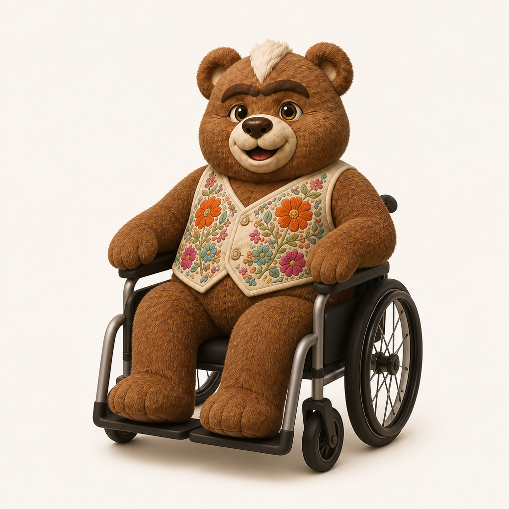
A — Face (non-canon)
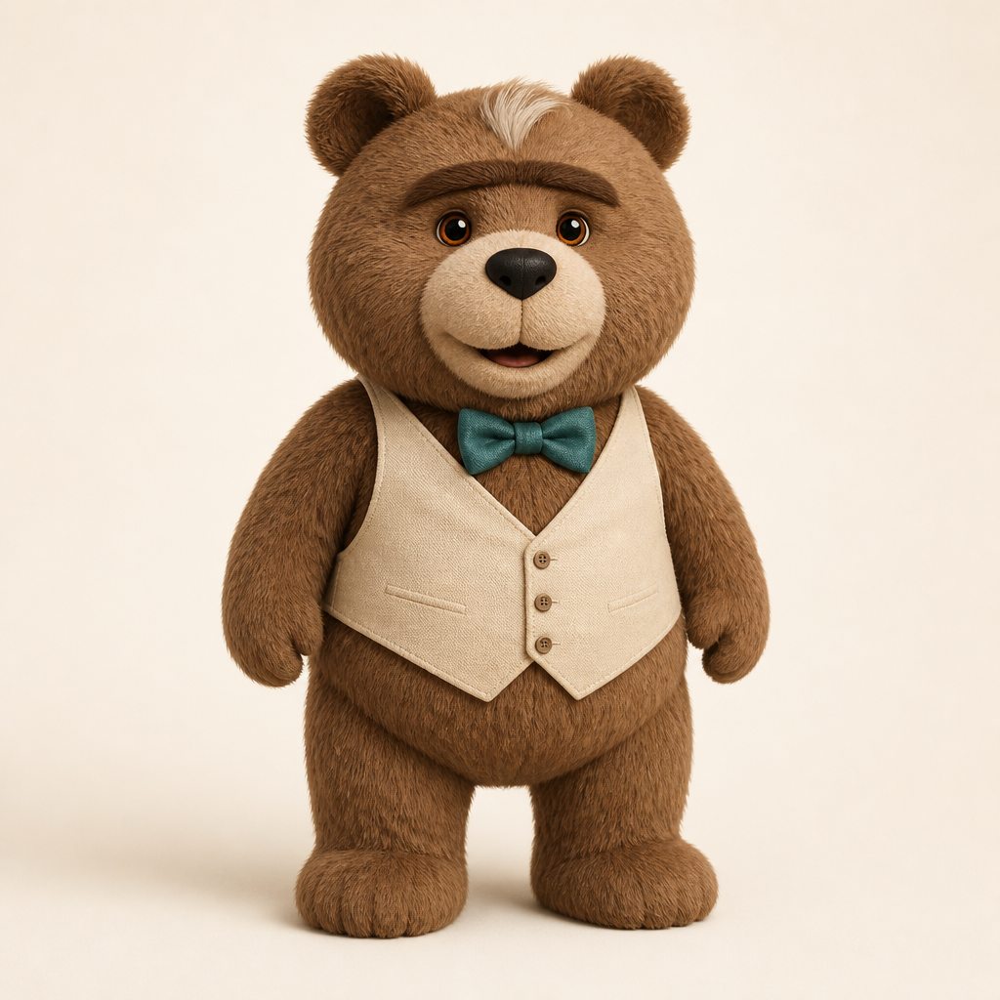
B — Front (non-canon)
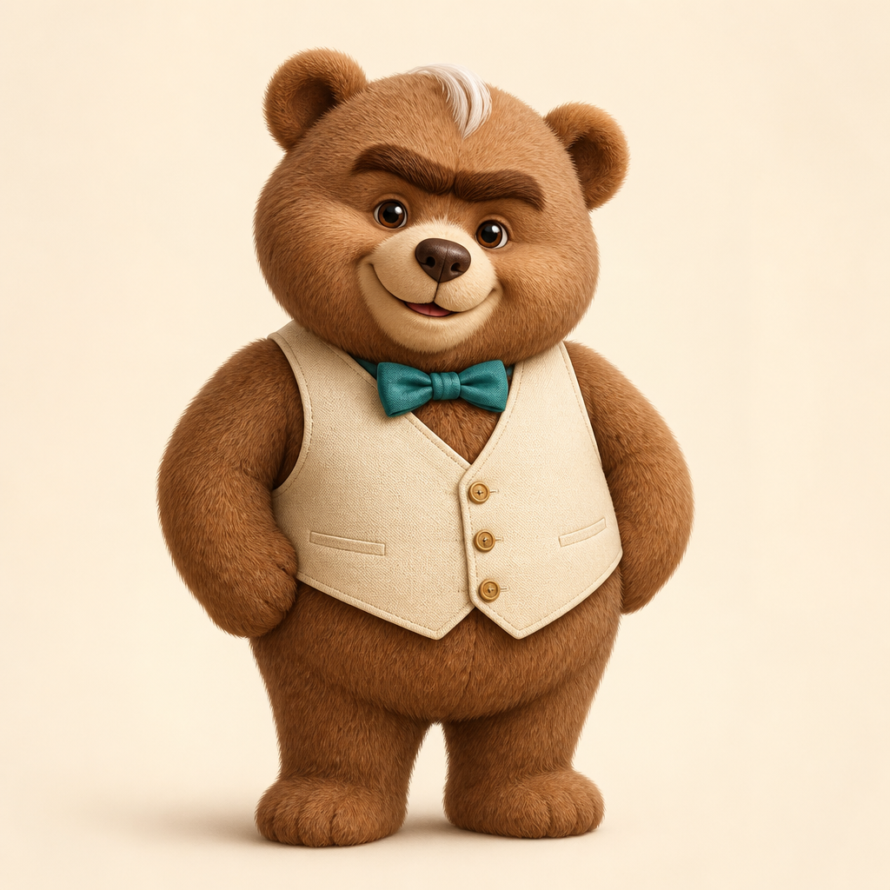
Scènes référentiel
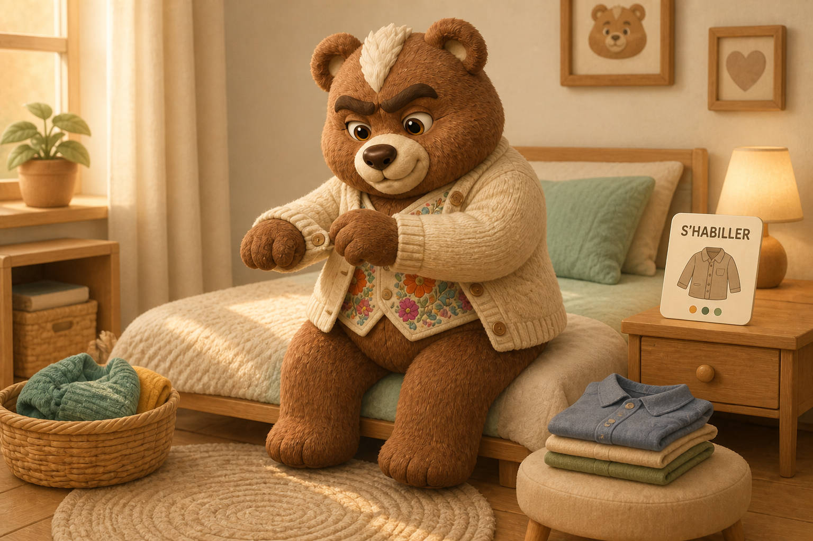
S'habiller
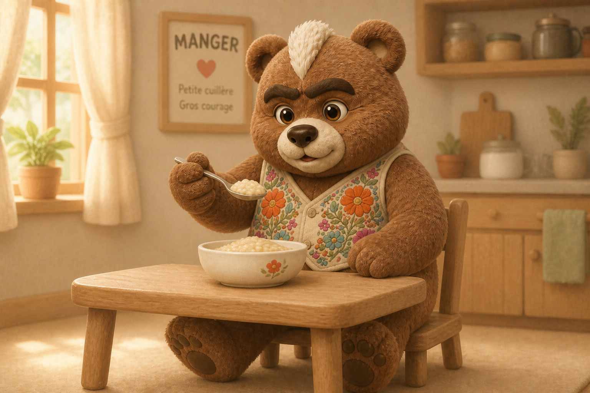
Manger
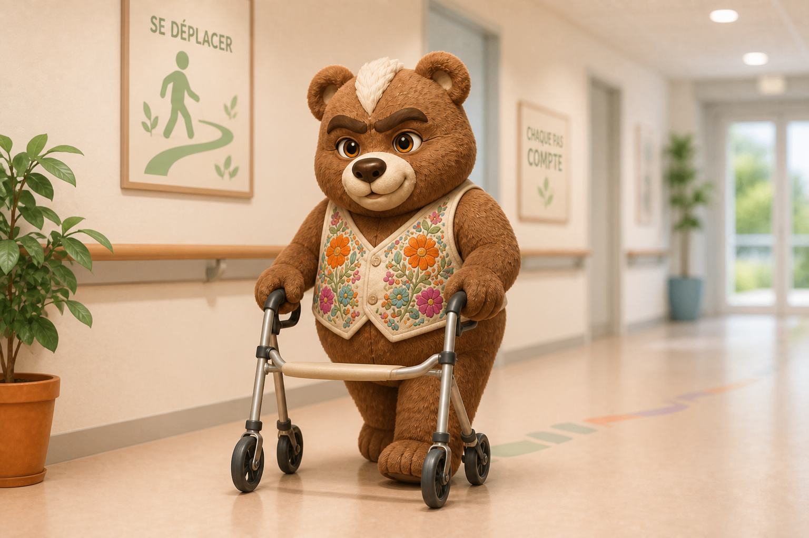
Se déplacer
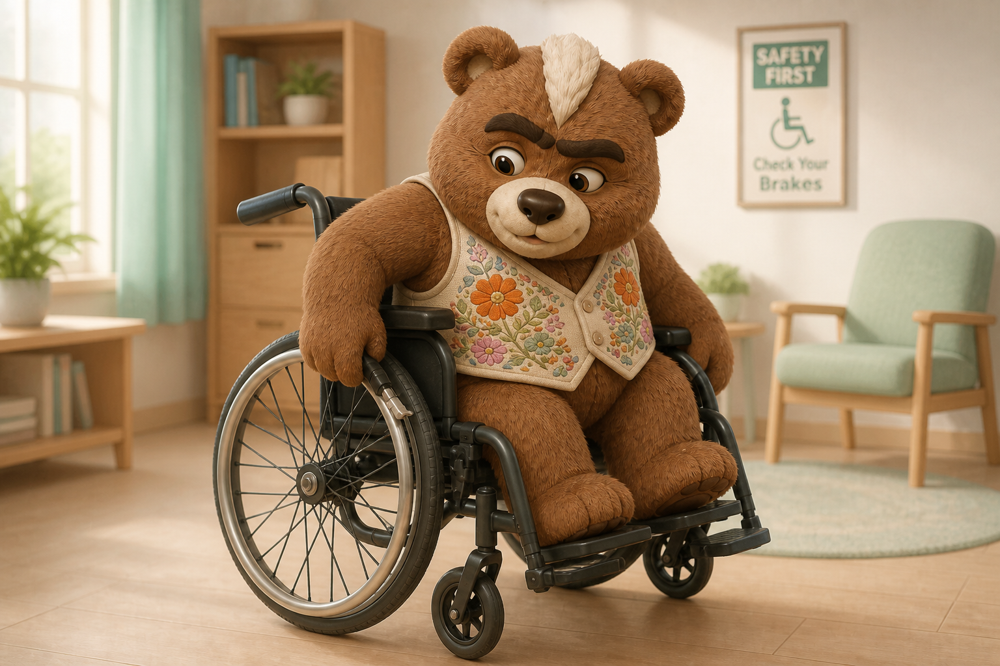
Fauteuil (freins)
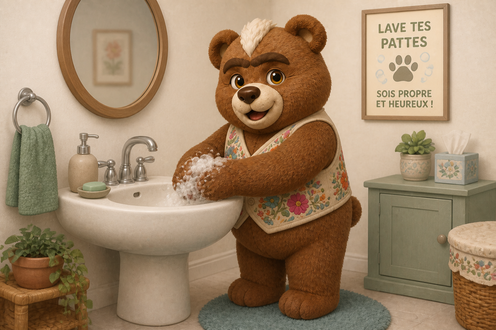
Toilette / hygiène
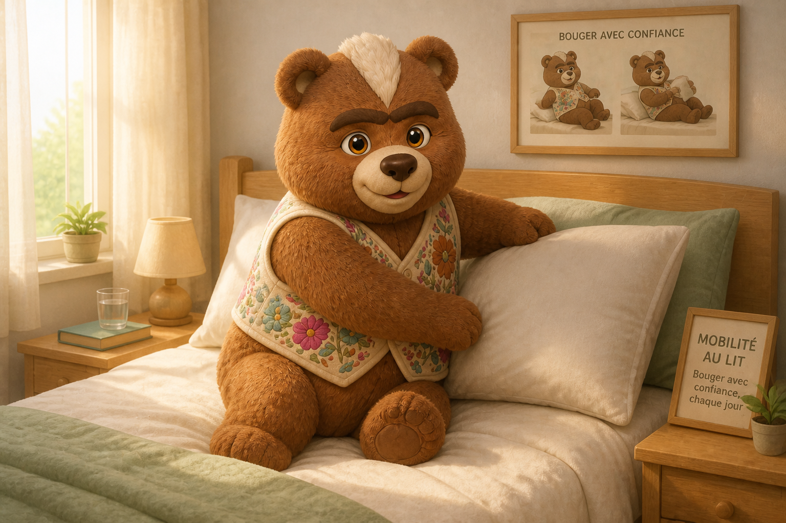
Mobilité au lit
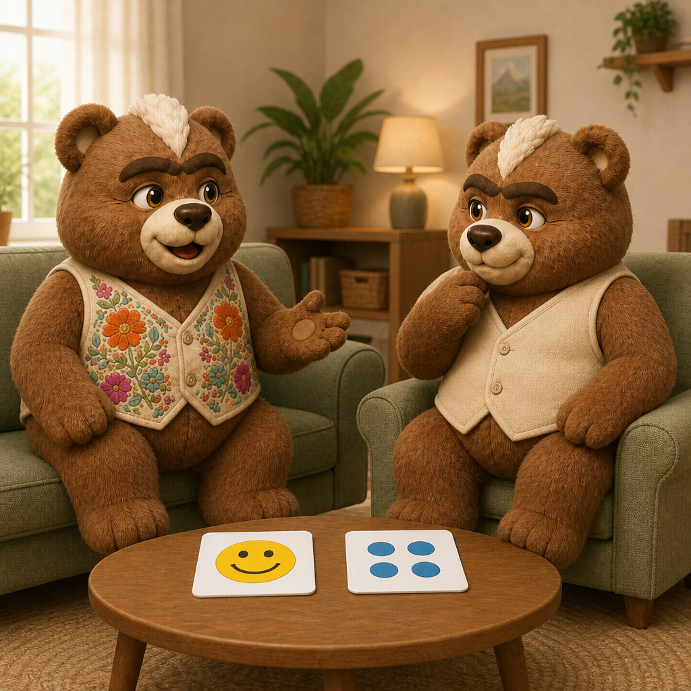
Communication
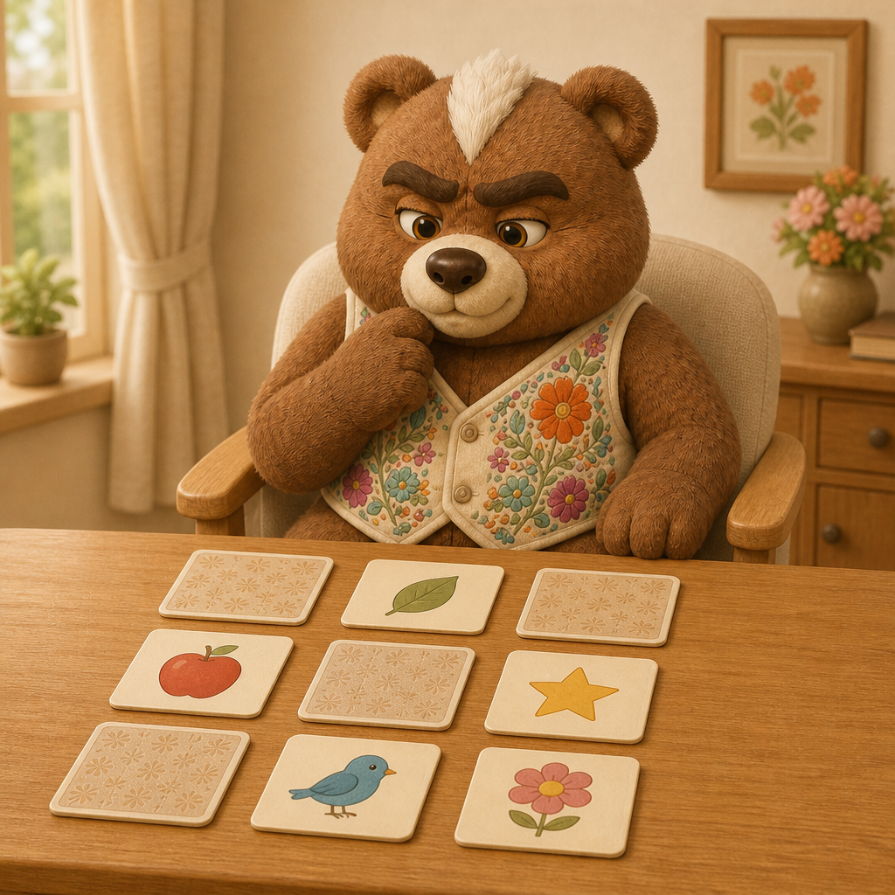
Mémoire / attention